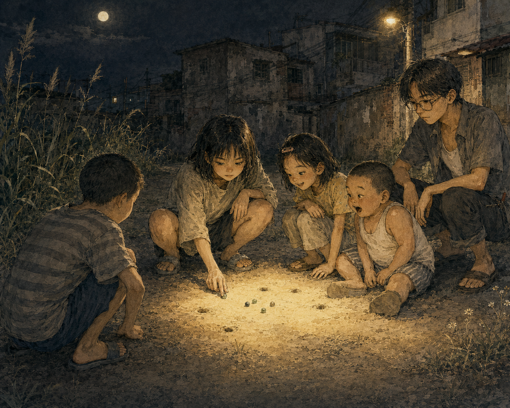
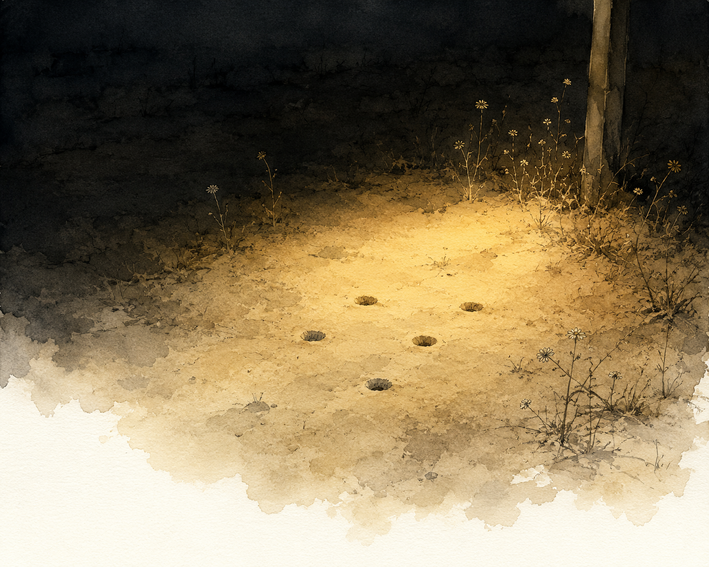

Sáng đó cũng như mọi sáng — tớ ngồi bệt góc hiên, cái Tâm ngồi bên kia bức tường, hai đứa chuyền cái lon qua lại kể ba thứ chuyện tào lao. Nó đang cười khúc khích cái gì đó thì tự nhiên tớ buột miệng:
“Ê, tối nay ra bãi đất chơi bắn bi với bọn tao không?”
Nói xong tớ mới nhớ ra. “Bọn tao” — thì có anh Môn, thằng Cò, với cái Huyền. Mà vụ nó với cái Huyền thì tớ biết rồi.
Dạo đó trời bớt mưa, cả đám hay ra khu đất trống cạnh nhà anh Môn, khoét mấy cái lỗ nhỏ chơi bắn bi. Anh Môn mê trò này ra mặt — tớ cứ tưởng “người lớn” như ảnh thì chẳng thèm để ý ba cái trò con nít, hóa ra ai lớn rồi cũng còn giữ một mẩu con nít trong người. Bi thì góp từ mấy lọ sơn xịt hết nước, nhà nào cũng có vài lọ, riêng nhà cái Huyền là nhiều nhất — ba nó xách về hoài, đám nhỏ đập đập gõ gõ lấy bi, rửa sạch là chơi được. Bi thường thì đầy, xoáy màu đơn hay tam sắc gì cũng có. Còn bi mẻ, bi trong thì hiếm — thằng Cò hay có, hỏi đâu ra nó chỉ cười “bí mật”, mà cái Huyền biết thừa nó móc tiền bán hàng đi mua.
“Ơ...” — cái Tâm ngập ngừng.
“Đi đi, vui lắm, khi nào anh Hoàng gọi thì về.”
Nó vẫn chưa gật. Không phải kiểu ngập ngừng chờ xin phép — anh Hoàng có cấm nó bao giờ đâu.
“Không sao, Huyền nó không nhớ đâu.”
Nói ra rồi tớ mới thấy chột dạ — biết tính Huyền, chắc gì nó quên. Nhưng cái Tâm gật, có lẽ vì câu đó, cũng có lẽ vì tối hè ở nhà chỉ có mỗi tivi với mấy cuốn sách giáo khoa cũ.
“Coi hoạt hình xong ra nha” — nó chốt.
Nó chốt rồi mà tớ lại đâm lo. Cả buổi chiều đầu óc cứ chạy một vòng: lỡ tối nay cái Huyền còn giận, nó quạu cái Tâm ngay giữa bãi đất — mà người rủ Tâm ra là tớ, tức là tại tớ. Rồi thằng Cò, anh Môn thấy hai đứa nó căng, mất vui, thể nào cũng quay qua trách tớ bày chuyện. Càng nghĩ vòng lo càng rộng ra, tới mức cái Tâm nói gì qua cái lon tớ cũng ừ hử, mẹ kêu gì tớ cũng dạ trớt quớt.
Tối, hết phim hoạt hình, hai đứa ra tới nơi thì anh Môn với thằng Cò đã đứng chờ sẵn. Không thấy cái Huyền.
Hay bữa nay Huyền nó ốm ta? — cái ý nghĩ vừa lóe lên thì anh Môn dập liền, nhanh như lúc ảnh nhảy từ cây trứng cá xuống:
“Nó rửa chén, tí ra.”
“A, anh Thiện dắt chị Tâm ra chơi luôn nè, hổm rày chị mất tăm” — thằng Cò hồn nhiên chen vô.
Cái Tâm gãi tay gãi tai không biết đáp sao. Tớ đỡ giùm:
“Mẹ nó bắt ở nhà phụ viết sổ.”
Thằng Cò gật, tin liền, hoặc nó chả bận tâm lý do làm gì. Nó chìa nắm bi ra:
“Chị lựa nè.” — rồi sực nhớ, dặn thêm — “Nhưng viên trong vắt này của chị Huyền, chị đừng lấy nha.”
Cái Tâm chắc lưỡi, chọn đại viên xoàng nhất, chắc sợ lỡ lấy trúng của ai khác thì mệt.
Bãi đất trống nằm cạnh nhà anh Môn, ngang chừng năm thước, dài cỡ bằng cái nhà ảnh. Sát bên là con hẻm dẫn qua xóm sau; ngăn giữa hẻm với bãi đất là một hàng cỏ lau, mọc cao ngang eo anh Môn. Giữa bãi, cỏ mọc lúm nhúm từng đám, xơ xác vì mấy nay ít mưa, lẫn vài bông hoa dại. Dưới ánh đèn đường vàng mờ mờ là năm cái lỗ bi anh Môn đào sẵn từ trước lúc tụi tớ qua.
Tâm chơi dở tệ, đang thua sát nút thằng Cò thì cái Huyền tới.
“Tao chơi từ lỗ 1 nha” — nó nói gọn lỏn, ngồi thụp xuống, búng một phát trúng thẳng lỗ số 2, viên bi kêu cạch một tiếng khô trong đất.

Từ lúc có Huyền, người chơi dở nhất thành ra là tớ. Cái Tâm thì mắt dán vào đường bi, cắt ngang đường về của Huyền một cú, mặt vênh lên đắc thắng. Ván đó Huyền nhất, tới anh Môn, rồi Tâm, Cò, tớ chót. Cò với Tâm cười tít mắt — chắc trước giờ hai đứa toa rập thay phiên đứng bét.
Gom bi xong, Huyền hỏi, không ngó ai:
“Sao hôm tổng kết mày hông chờ tao về hả, con kia?”
“Con kia” thì chỉ có mỗi Tâm. Dưới ánh đèn vàng mà tớ cũng thấy mặt nó đỏ lên.
“Ơ... à, thì... tưởng Huyền giận chuyện Tâm dậy muộn hôm đó, nên hông dám bắt chuyện” — Tâm ấp úng.
“Mày dậy trễ hoài, tao lạ gì. Không thấy mày ra tao đi trước.” — Huyền dửng dưng, xếp mấy con bi vô túi.
Không phải vì dậy muộn. Là vì bữa đó Tâm bơ bơ về trước — mà Huyền đâu biết, Tâm chỉ đang ngại.
Đoạn sau tớ không nhớ rõ Tâm có xin lỗi hay không, Huyền đáp sao, anh Môn với thằng Cò đứng chỗ nào. Chỉ nhớ đêm đó trăng tròn, tiếng côn trùng rả rích, trời oi oi kiểu mùa hè, và cái quầy hàng nhà thuê của Tâm đã đóng cửa tối om cạnh đó. Tự nhiên thấy người nhẹ hẳn — cái vòng lo tớ vẽ cả buổi chiều, hóa ra không có cái nào xảy ra hết. Lúc vô nhà ngủ, Tâm nói với tớ câu gì đó, hình như cảm ơn.

Từ bữa đó, bộ năm của xóm — ba chị, một em út, cộng thêm anh Môn bất đắc dĩ — coi như đủ mặt. Tối nào không cần hẹn, vẫn có năm cái bóng đứng ở bãi đất trống, hoặc dưới tán cây trứng cá.